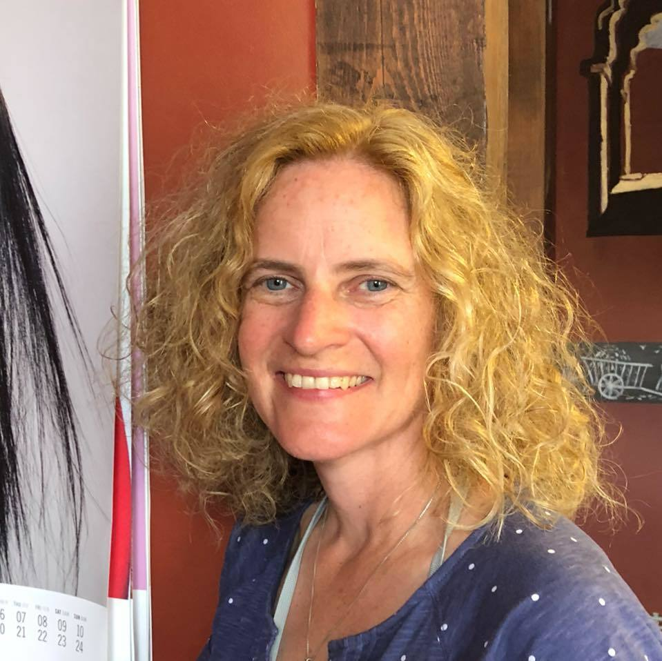
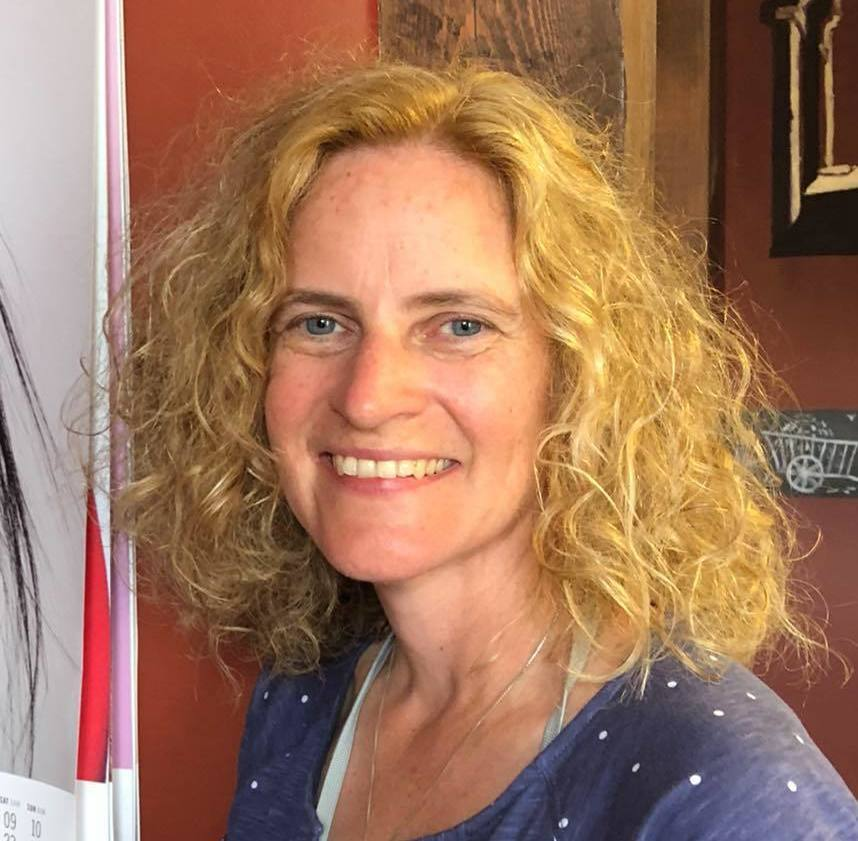

Ivete Augenberga b. 1973
Peter's second cousin.
Living. As for every living relative on this site, the birth date is given by year only, and no current address is shown.
Also recorded as Ivete Mara Augenbergs (married name Larroquette).
Ivete Augenberga was born in 1973 (according to an online family tree)2, the daughter of Uģis Augenbergs and Ilze Balka7,8.
Family
- Parents
- Uģis Augenbergs 1938–2019 and Ilze Balka b. 1945 documented
- Partner
- Ezekial Larroquette b. 1974
- Children
Life events
| Event | Date | Place and details |
|---|---|---|
| Born | 1973 | According to an online family tree2 |
| Lived | bet 1973 and 1 Feb 1994 | Beverly Hills, Michigan, United States3 |
| Education | 24 Nov 1994 | Michigan, United States Student at Oakland University from Beverly Hills, Oakland County, Michigan; awarded a $1,500 scholarship from the William T. Morris Foundation of New York City.5 |
| Lived | 2 Nov 2004 | Troy, Michigan, United States According to an online family tree4 |
| Note | According to an online family tree6 |
Photographs


Records


Sources
- MyHeritage family tree 'Dzimta' of Peter's third cousin (his family site), member GEDCOM export of 26 Oct 2026, I148 (person-6000148), GEDCOM lines 4416–4472.
NAME Ivete Mara /Augenbergs/ · _MARNM Larroquette
- MyHeritage family tree 'Dzimta' of Peter's third cousin (his family site), member GEDCOM export of 26 Oct 2026, I148 (person-6000148), GEDCOM lines 4416–4472.
BIRT · 1973
His record match: ASV Publisko Ierakstu Indekss, https://www.myheritage.lv/research/collection-10220/asv-publisko-ierakstu-indekss?itemId=240939797&action=showRecord: 'Ivete Mara Augenbergs | Dzimšana: 1973 | Pazīstams arī kā: Larroquette M Ivete'. His record match: ASV Publisko Ierakstu Indekss, https://www.myheritage.lv/research/collection-10220/asv-publisko-ierakstu-indekss?itemId=684220512&action=showRecord: 'Ivete Mara Larroquette | Dzimšana: 1973'.
- Ivete Mara Augenbergs — [address omitted], Beverly Hills, MI 48025-2720 (1 Feb 1994).
Ivete Mara Augenbergs … Dzīves vietas: Dzīves vietaDatums[address omitted], Beverly HillsMichigan 48025-2720, USA1. Feb 1994
Born in 1973 to Jānis Uģis Augenbergs and Ilze Balka while her parents resided at [address omitted], Beverly Hills, Oakland County, Michigan, and directly recorded at that Beverly Hills residence in the US Public Records Index on 1 February 1994 at age 20.
- MyHeritage family tree 'Dzimta' of Peter's third cousin (his family site), member GEDCOM export of 26 Oct 2026, I148 (person-6000148), GEDCOM lines 4416–4472.
RESI · 2 NOV 2004 · [address omitted], Troy, Michigan 48098-1879, USA
- Oakland University Scholarship Winners, The Oakland Press (Pontiac, Michigan), 24 November 1994, p. 103.
Oakland University has awarded $1,500 scholarships to . 34 area students, courtesy of the William T. Morris Foundation of New York City. ... This year’s scholarship winners are: Ivete Augenbergs, Beverly Hills; Leanne Barber, Kendra Barus and Erica Blake of Troy;
Student at Oakland University from Beverly Hills, Oakland County, Michigan; awarded a $1,500 scholarship from the William T. Morris Foundation of New York City.
- MyHeritage family tree 'Dzimta' of Peter's third cousin (his family site), member GEDCOM export of 26 Oct 2026, I148 (person-6000148), GEDCOM lines 4416–4472.
RESI
- Peter's tree, danenberg.sql, 2007–2015, parentages 37.
- Obituary: Vera Augenbergs, Indiana funeral home notices and obituaries (Indianapolis, Indiana), 7 December 2008.
Vera Augenbergs 98, of Indianapolis, passed away December 7, 2008, a native of Ergli, Latvia, born July 3, 1910. She worked for Methodist Hospital for many years retiring in 1975 and was a member of Latvian Retiree s Association. Survivors include son, John Augenbergs of Farmingham, MI; two granddaughters, Inga and her husband, Dr. David Zadvinskis and Ivete and her husband, Ezequiel Larroquette; two great- grandsons, Lukas and Nahuel Larroquette. Service: Saturday December 13, 2008 1:00 p.m. at Flanner and Buchanan Funeral Center-Broad Ripple, with calling two hours prior. In lieu of flowers memorial contributions can be made to Latvian Evangelical Lutheran Church of Indianapolis 801 W. 73rd Street Indianapolis, Indiana 46260.
father: Uģis Augenbergs